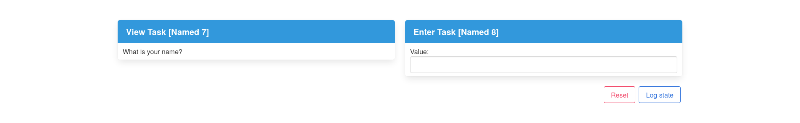

Installation & Usage
Installation
The project is currently untested as a library, however it should just work. Keep in mind that TopHat uses a custom Prelude, so you will have to use a mixin or some other solution.
Usage
The library exposes a single function: visualizeTask. The library will spin up
a web server to visualize the passed task. By default, the application can be
accessed at http://localhost:3000. The port number can
be changed by passing it as an environment variable, e.g.:
PORT=3001 stack run
Consider the following example:
{-# LANGUAGE OverloadedStrings #-}
import Task (Task, enter, view, (>>?))
import Visualize (visualizeTask)
main :: IO ()
main = visualizeTask greet
greet :: Task h Text
greet =
(question >< promptName)
>>? \(_, name) -> view ("Hello, " <> name)
where
question :: Task h Text
question = view "What is your name?"
promptName :: Task h Text
promptName = enter
This will produce the following application when run:
